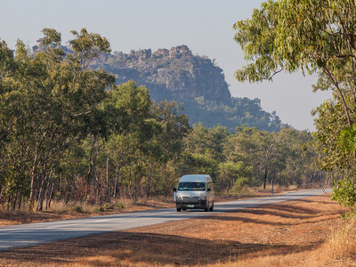
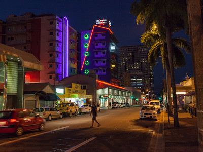
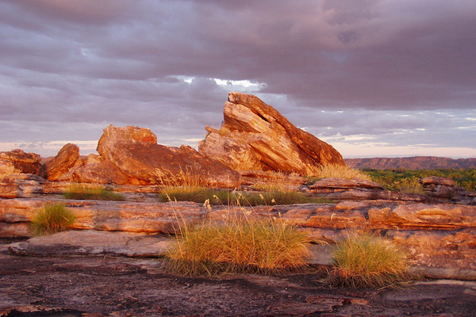
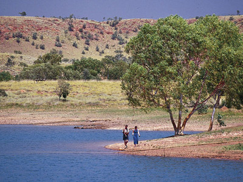

在达尔文东南33公里的路口，开玩卡卡杜方向的就是阿纳姆公路。迪吉里杜管小屋和艺术画廊就位于交叉路口处，在这你可以看到来自卡卡杜和阿纳姆地的本土艺术家正在进行创作，并可购买岛迪吉里管。继续沿公路前进10公里到达一个名叫汉姆帝的小镇，这个名字来自许多当地说法。距离小镇15公里就到了福戈水坝保护区，保护区是几千条水蟒的家园。
标题


达尔文中央商务区（Darwin central business district）达尔文市区的美食中心主要集中在Mitchell和Knuckey街附近，这里到处是餐厅、咖啡吧和酒吧。早餐的话，乌诺咖啡吧 (Café Uno) 提供美味的烤鳄梨、番茄和乳酪新月形面包。咖啡爱好者们可前往步行街的21号咖啡屋 (Café 21)。要想尝个鲜的话，试试Roma吧的柠檬酱椰子面包，还有 Ducks Nuts 吧的枫蜜法式烘面包和熏肉。在中央商务区的午餐选择更多。你可以去GoSushi吃寿司，在智慧咖啡吧(Wisdom Bar & Café) 品尝凯撒沙拉，或是在Roast and Noodle吃香脆可口的烤鸭。在美味屋 (Tasty House)享用点心。

乌比尔（Ubirr）是阿纳姆悬崖露出地面的岩层。因引人入胜的土著岩石艺术地而闻名。从乌比尔停车场，有一条轻松的1公里环形路线通往由天然岩石形成的天然艺术画廊。精彩的是主长廊的岩壁上画着大批保存完好的沙袋鼠、负鼠、乌龟和鱼，还有迷人的塔斯马尼亚虎。另外还让人感兴趣的是有关彩虹蛇和纳曼卡姐妹的绘画，画面展示了姐妹俩的手间绳子被拉紧的情形。

腾南特克里克（Tennant Creek）是一个有大约3,500人的小城镇，位于艾丽丝泉以北500公里，位于达尔文以南1000公里。该镇被巴克利高原环绕着向东延伸——巴克利高原是一片广袤的土地，养育了澳大利亚一些主要的牛场。这个地方因土著文化、金矿、和畜牧业而闻名。其周边地区被称为巴克利高原(Barkly Tablelands)，那是一片广阔的草地平原，有着无垠的蓝天和众多的牛场。